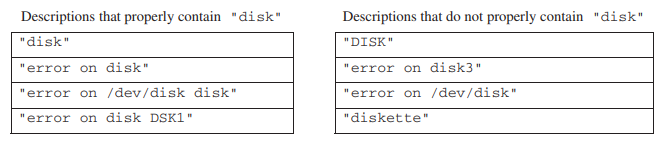
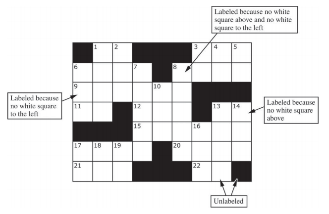
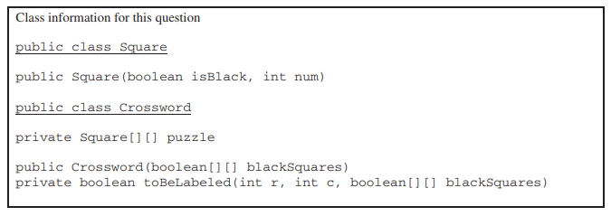
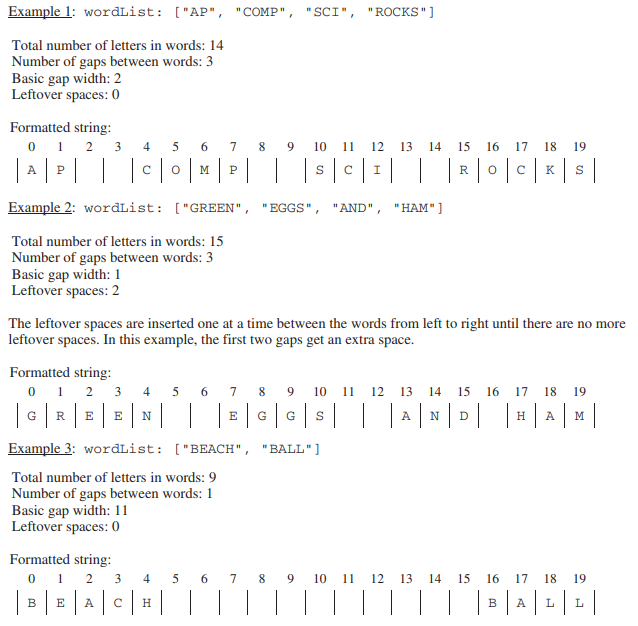
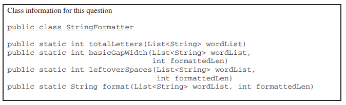

9. AP计算机2016年考试：主观题
I. This question involves the implementation and extension of a RandomStringChooser class.
(a) A RandomStringChooser object is constructed from an array of non-null String values. When the object is first constructed, all of the strings are considered available. The RandomStringChooser class has a getNext method, which has the following behavior. A call to getNext returns a randomly chosen string from the available strings in the object. Once a particular string has been returned from a call to getNext, it is no longer available to be returned from subsequent calls to getNext. If no strings are available to be returned, getNext returns "NONE".
The following code segment shows an example of the behavior of RandomStringChooser.
String[] wordArray = {"wheels", "on", "the", "bus"};
RandomStringChooser sChooser = new RandomStringChooser(wordArray);
for (int k = 0; k < 6; k++)
{
System.out.print(sChooser.getNext() + " ");
}
One possible output is shown below. Because sChooser has only four strings, the string "NONE" is printed twice.
bus the wheels on NONE NONE
Write the entire RandomStringChooser class. Your implementation must include an appropriate constructor and any necessary methods. Any instance variables must be private. The code segment in the example above should have the indicated behavior (that is, it must compile and produce a result like the possible output shown). Neither the constructor nor any of the methods should alter the parameter passed to the constructor, but your implementation may copy the contents of the array.
(b) The following partially completed RandomLetterChooser class is a subclass of the RandomStringChooser class. You will write the constructor for the RandomLetterChooser class.
public class RandomLetterChooser extends RandomStringChooser
{
/** Constructs a random letter chooser using the given string str.
* Precondition: str contains only letters
*/
public RandomLetterChooser(String str)
{ /* to be implemented in part (b) */ }
/** Returns an array of single-letter strings.
* Each of these strings consists of a single letter from str. Element k
* of the returned array contains the single letter at position k of str.
* For example, getSingleLetters("cat") returns the
* array { "c", "a", "t" }.
*/
public static String[] getSingleLetters(String str)
{ /* implementation not shown */ }
}
The following code segment shows an example of using RandomLetterChooser.
RandomLetterChooser letterChooser = new RandomLetterChooser("cat");
for (int k = 0; k < 4; k++)
{
System.out.print(letterChooser.getNext());
}
The code segment will print the three letters in "cat" in one of the possible orders. Because there are only three letters in the original string, the code segment prints "NONE" the fourth time through the loop. One possible output is shown below.
actNONE
Assume that the RandomStringChooser class that you wrote in part (a) has been implemented correctly and that getSingleLetters works as specified. You must use getSingleLetters appropriately to receive the full credit.
Complete the RandomLetterChooser constructor below.
/** Consturcts a random letter chooser using the given string str.
* Precondition: str contains only letters.
*/
public RandomLetterChooser(String str)
II. This question involves two classes that are used to process log messages. A list of sample log messages is given below.
CLIENT3:security alert - repeated login failures
Webserver:disk offline
SERVER1:file not found
SERVER2:read error on disk DSK1
SERVER1:write error on disk DSK2
Webserver:error on /dev/disk
Log messages have the format machineId:description, where machineId identifies the computer and description describes the event being logged. Exactly one colon (“:”) appears in a log message. There are no blanks either immediately berfore or immediately after the colon.
The following LogMessage class is used to represent a log message.
public class LogMessage
{
private String machineId;
private String description;
/** Precondition: message is a valid log message. */
public LogMessage(String message)
{ /* to be implemented in part (a) */ }
/** Returns true if the description in this log message properly contains keyword;
* false otherwise
*/
public boolean containsWord(String keyword)
{ /* to be implemented in part (b) */ }
public String getMachineId()
{ return machineId; }
public String getDescription()
{ return description; }
// There may be instance variables, constructors, and methods that are not shown.
}
(a) Write the constructor for the LogMessage class. It must initialize the private data of the object so that getMachineId returns the machineId part of the message and getDescription returns the description part of the message.
Complete the LogMessage constructor below.
/** Precondition: message is a valid log message. */
public LogMessage(String message)
(b) Write the LogMessage method containsWord, which returns true if the description in the log message properly contains a given keyword and returns false otherwise.
A description properly contains a keyword if all three of the following conditions are true.
- the keyword is a substring of the description;
- the keyword is either at the beginning of the description or it is immediately preceded by a space;
- the keyword is either at the end of the description or it is immediately followed by a space.
The following tables show several examples. The descriptions in the left table properly contain the keyword "disk". The descriptions in the right table do not properly contain the keyword "disk".

Assume that the LogMessage constructor works as specified, regardless of what you wrote in part (a).
Complete method containsWord below.
/** Returns true if the description in this log message properly contains keyword;
* false otherwise.
*/
public boolean containsWord(String keyword)
(c) The SystemLog class represents a list of LogMessage objects and provides a method that removes and returns a list of all log messages (if any) that properly contain a given keyword. The messages in the returned list appear in the same order in which they originally appeared in the system log. If no message properly contains the keyword, an empty list is returned. The declaration of the SystemLog class is shown below.
public class SystemLog
{
/** Contains all the entries in this system log.
* Guaranteed not to be null and to contain only non-null entries.
*/
private List<LogMessage> messageList;
/** Removes from the system log all entries whose descriptions properly contain keyword,
* and returns a list (possibly empty) containing the removed entries.
* Postcondition:
* - Entries in the returned list properly contain keyword and
* are in the order in which they appeared in the system log.
* - The remaining entries in the system log do not properly contain keyword and
* are in their original order.
* - The returned list is empty if no messages properly contain keyword.
*/
public List<LogMessage> removeMessages(String keyword)
{ /* to be implemented in part(c) */ }
// There may be instance variables, constructors, and methods that are not shown.
}
Write the SystemLog method removeMessages, which removes from the system log all entries whose descripotions properly contain keyword and returns a list of the removed entries in their original order. For example, assume that theLog is a SystemLog object initially containing six LogMessage objects representing the following list of log messages.
CLIENT3:security alert - repeated login failures
Webserver:disk offline
SERVER1:file not found
SERVER2:read error on disk DSK1
SERVER1:write error on disk DSK2
Webserver:error on /dev/disk
The class theLog.removeMessages("disk") would return a list containing the LogMessage objects representing the following log messages.
Webserver:disk offline
SERVER2:read error on disk DSK1
SERVER1:write error on disk DSK2
After the call, theLog would contain the following log messages.
CLIENT3:security alert - repeated login failures
SERVER1:file not found
Webserver:error on /dev/disk
Assume that the LogMessage class works as specified, regardless of what you wrote in parts (a) and (b). You must use containsWord appropriately to receive full credit.
Complete method removeMessages below.
/** Removes from the system log all entries whose descriptions properly contain keyword,
* and returns a list (possibly empty) containing the removed entries.
* Postcondition:
* - Entries in the returned list properly contain keyword and
* are in the order in which they appeared in the system log.
* - The remaining entries in the system log do not properly contain keyword and
* are in their original order.
* - The returned list is empty if no messages properly contain keyword.
*/
public List<LogMessage> removeMessages(String keyword)
III. A crossword puzzle grid is a two-dimensional rectangular array of black and white squares. Some of the white squares are labeled with a positive number according to the crossword labeling rule.
The crossword labeling rule identifies squares to be labeled with a positive number as follows.
A square is labeled with a postive number if and only if
- the square is white and
- the square does not have a white square immediately above it, or it does not have a white square immediately to its left, or both.
The squares identified by these criteria are labeled with consecutive numbers in row-major order, starting at 1.
The following diagram shows a crossword puzzle grid and the labeling of the squares according to the crossword labeling rule.

This question uses two classes, a Square class that represents an individual square in the puzzle and a Crossword clas that represents a crossword puzzle grid. A partial declaration of the Square clas is shown below.
public class Square
{
/** Constructs one square of a crossword puzzle grid.
* Postcondition:
* - The square is black if and only if isBlack is true.
* - The square has number num.
*/
public Square(boolean isBlack, int num)
{ /* implementation not shown */ }
// There may be instance variables, constructors, and methods that are not shown.
}
A partial declaration of the Crossword class is shown below. You will implement one method and the constructor in the Crossword class.
public class Crossword
{
/** Each element is a Square object with a color (black or white) and a number.
* puzzle[r][c] represents the square in row r, column c.
* There is at least one row in the puzzle.
*/
private Square[][] puzzle;
/** Constructs a crossword puzzle grid.
* Precondition: There is at least one row in blackSquares.
* Postcondition:
* - The crossword puzzle grid has the same dimensions as blackSquares.
* - The Square object at row r, column c in the crossword puzzle grid is black
* if and only if blackSquares[r][c] is true.
* - The squares in the puzzle are labeled according to the crossword labeling rule.
*/
public Crossword(boolean[][] blackSquares)
{ /* to be implemented in part (b) */ }
/** Returns true if the square at row r, column c should be labeled with a positive number;
* false otherwise.
* The square at row r, column c is black if and only if blackSquares[r][c] is true.
* Precondition: r and c are valid indexes in blackSquares.
*/
private boolean toBeLabeled(int r, int c, boolean[][] blackSquares)
{ /* to be implemented in part (a) */ }
// There may be instance variables, constructors, and methods that are not shown.
}
(a) Write the Crossword method toBeLabeled. The method returns true if the square indexed by row r, column c in a crossword puzzle grid should be labeled with a postive number according to the crossword labeling rule; otherwise it returns false. the parameter blackSquares indicates which squares in the crossword puzzle grid are black.

Complete the method toBeLabeled below.
/** Returns true if the square at row r, column c should be labeled with a positive number;
* false otherwise.
* The square at row r, column c is black if and only if blackSquares[r][c] is true.
* Precondition: r and c are valid indexes in blackSquares.
*/
private boolean toBeLabeled(int r, int c, boolean[][] blackSquares)
(b) Write the Crossword constructor. The constructor should initialize the crossword puzzle grid to have the same dimensions as the parameter blackSquares. Each element of the puzzle grid should be initialized with a reference to a Square object with the appropriate color and number. The number is positive if the square is labeled and 0 if the square is not labeled.
Assume that toBeLabeled works as specified, regardless of what you wrote in part (a). You must use toBeLabeled appropriately to receive full credit.
Complete the Crossword constructor below.
/** Constructs a crossword puzzle grid.
* Precondition: There is at least one row in blackSquares.
* Postcondition:
* - The crossword puzzle grid has the same dimensions as blackSquares.
* - The Square object at row r, column c in the crossword puzzle grid is black
* if and only if blackSquares[r][c] is true.
* - The squares in the puzzle are labeled according to the crossword labeling rule.
*/
public Crossword(boolean[][] blackSquares)
IV. This question involves the process of taking a list of words, called wordList, and producing a formatted string of a specified length. The list wordList contains at least two words, consisting of letters only.
When the formatted string is constructed, spaces are placed in the gaps between words so that as many spaces as possible are evenly distributed to each gap. The equal number of spaces inserted into each gap is referred to as the basic gap width. Any leftover spaces are inserted one at a time into the gaps from left to right until there are no more leftover spaces.
The following three examples illustrate these concepts. In each example, the list of words is to be placed into a formatted string of length 20.

You will implement three static methods in a class named StringFormatter that is not shown.
(a) Write the StringFormatter method totalLetters, which returns the total number of letters in the words in its parameter wordList. For example, if the variable List<String> words is ["A", "frog", "is"], then the call StringFormatter.totalLetters(words) returns 7. You may assume that all words in wordList consist of one or more letters.
Complete method totalLetters below.
/** Returns the total number of letters in wordList.
* Precondition: wordList contains at least two words, consisting of letters only.
*/
public static int totalLetters(List<String> wordList)
(b) Write the StringFormatter method basicGapWidth, which returns the basic gap width as defined earlier.

Assume that totalLetters works as specified regardless of what you wrote in part (a). You must use totalLetters appropriately to receive full credit.
Complete method basicGapWidth below.
/** Returns the basic gap width when wordList is used to produce
* a formatted string of formattedLen characters.
* Precondition: wordList contains at least two words, consisting of letters only.
* formattedLen is large enough for all the words and gaps.
*/
public static int basicGapWidth(List<String> wordList, int formattedLen)
(c) Write the StringFormatter method format, which returns the formatted string as defined earlier. The StringFormatter class also contains a method called leftoverSpaces, which has already been implemented. This method returns the number of leftover spaces as defined earlier and is shown below.
/** Returns the number of leftover spaces when wordList is used to produce
* a formatted string of formattedLen characters.
* Precondition: wordList contains at least two words, consisting of letters only.
* formattedLen is large enough for all the words and gaps.
*/
public static int leftoverSpaces(List<String> wordList, int formattedLen)
{ /* implementation not shown */ }
Assume that basicGapWidth works as specified, regardless of what you wrote in part (b). You must use basicGapWidth and leftoverSpaces appropriately to receive full credit.
Complete method format below.
/** Returns a formatted string consisting of the words in wordList separated by spaces.
* Precondition: The wordList contains at least two words, consisting of letters only.
* formattedLen is large enough for all the words and gaps.
* Postcondition: All words in wordList appear in the formatted string.
* - The words appear in the same order as in wordList.
* - The number of spaces between words is determined by basicGapWidth and the
* distribution of leftoverSpaces from left to right, as described in the question.
*/
public static String format(List<String> wordList, int formattedLen)